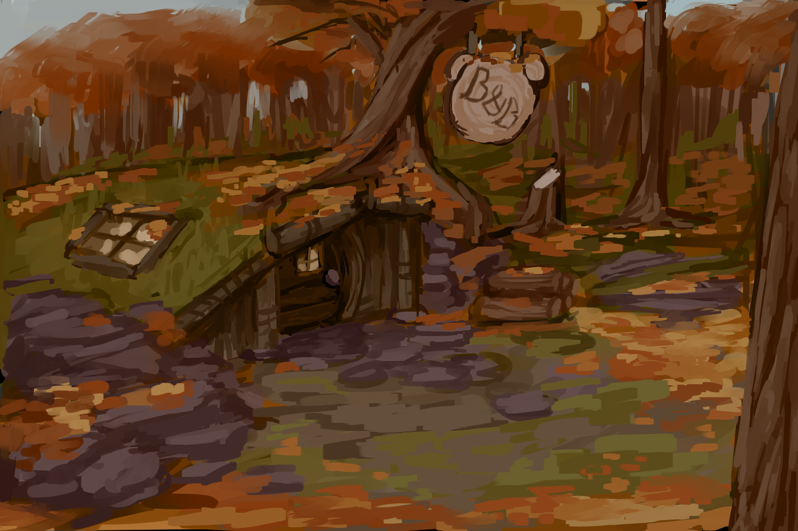

Bearly Baking was a project made by 7 people over the course of 10 months, with the majority of work completed in the first month and a half for a school project, and then worked on sparingly for the next 4, then really hammered during the summer months while all members were on break from school. In the initial months, we came up with the core gameplay loop, made the majority of characters with full artwork, and made the entirety of the major play area. Once we decided to make this piece into a full game and release it, we added onto the inital design, with another full character, several small side characters with an overarching narrative, added play area, an added use for our rating system, character redesign, and more.

My role on the game stemmed primarily as the narrative designer for the project. I was in charge of writing each characters' interactions with the player, including small branching dialogue, and making sure their stories had a self-contained narrative. Each character had upwards of 50 dialogue lines, fully voiced by team members, and their own personalities. Later in the summer sprints, I then also designed a narrative for the player owning the store and made a full new character.

Early on in the game, as the only designer, I helped flesh out what we wanted for the gameplay to be. We eventually setteled on something very similar to the old Papa's flash games, where different ingredients are mixed together for recipies to deliver to customers. In all honesty, this was the easy part, as everyone that was in talks about the gameplay was very much of similar mind, and things did not need constant oversight or redesign work, allowing me to focus much more of my time on making sure our characters were lovable and unique.